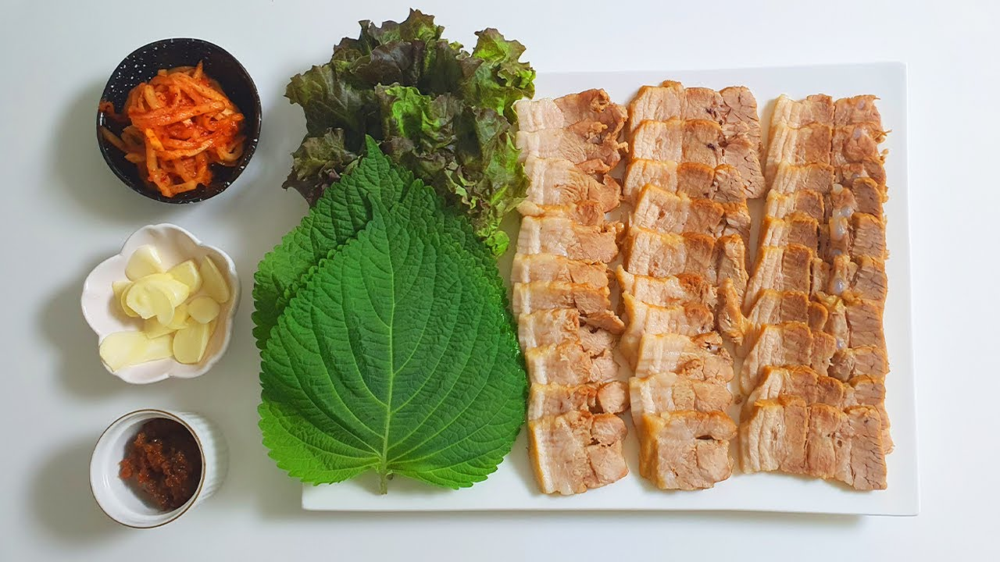

Best Bossam Recipe Out There

Bossam, Korean boiled pork belly
Bossam is a traditional Korean dish that comprises of boiled pork belly with an assortment of side dishes or vegetables
This recipe is my personal favorite that includes what each ingredient will do for the dish itself, enjoy!
Ingredients to boil
- 1kg pork belly
- 1/2 cup of soy sauce
- 1/4 cup of sugar
- 1/4 cup of rice wine
- 1/4 cup of sesame oil
- 1/4 cup of minced garlic
- 1/4 cup of minced ginger
- 1/4 cup of chopped green onions
- 1/4 cup of gochugaru (Korean red pepper flakes)
- 1 cup of ground coffee or coffee
Great sides to pair with Bossam
- 1 cup of kimchi
- 1 cup of pickled radish
- 1 cup of lettuce leaves
- 1 cup of sliced garlic
- 1 cup of sliced green chili peppers
- 1 cup of ssamjang (Korean dipping sauce)